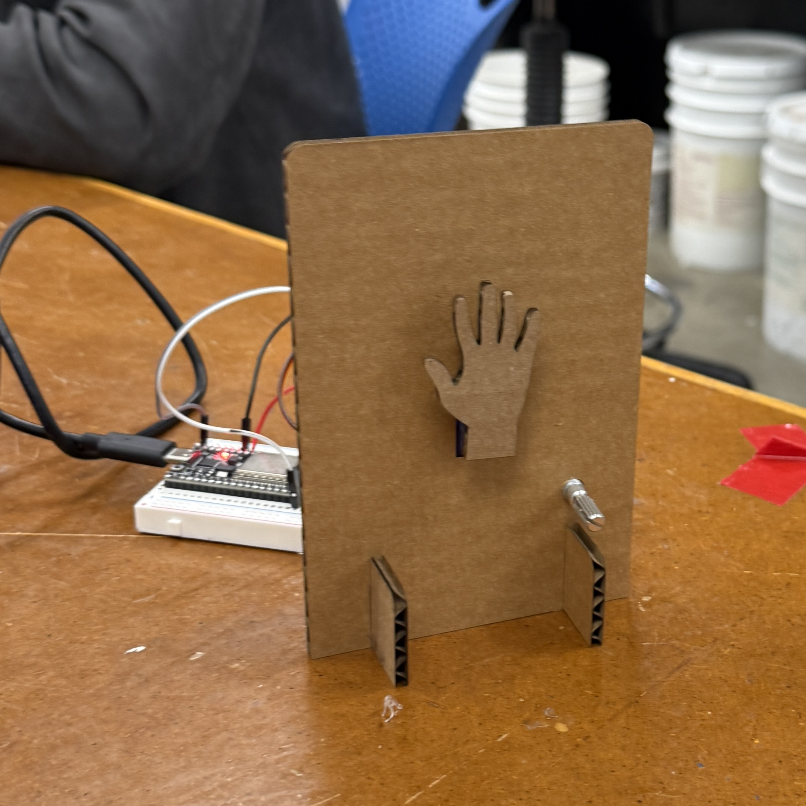

<div class="textcontainer">
<p class="margin"> </p>
<h3>Week 4: Microcontroller Programming</h3>
<h4>[Do Something with an arduino]</h4>
<img src="./test.gif" alt="the code working!" style="width:400px;height:400px;">
<br></br>
Have you every had the awkward experience of waving to someone and they just didn't see you? Well I created a solution
to that problem with an ESP32-controlled waving hand! This project uses a servo motor and potentiometer to wave a hand back
and forth based on the user's input. You can be control how dramatic the wave is by turning the potentiometer; the hand will
match your movements!
<br></br>

<br></br>
Coding this project was challenging for me since I spent a day trying to troubleshoot my code while I simply had a dead servo.
Once I replaced the servo, I was able to get my code working smoothly and broke it down into simpler segments as seen above.
The cardboard cutouts were laser-cut and I used hot glue to assemble all the pieces toegther. I also used soldering to attach
wires to the potentiometer and then connect them to the breadboard. In the end, I am happy how this project turned out,
exposing me to the possibilities and simplicity of microcontroller programming. See the final project gif below!
<br></br>
<img src="./final.gif" alt="final project GIF" style="width:400px;height:550px;">
</div>